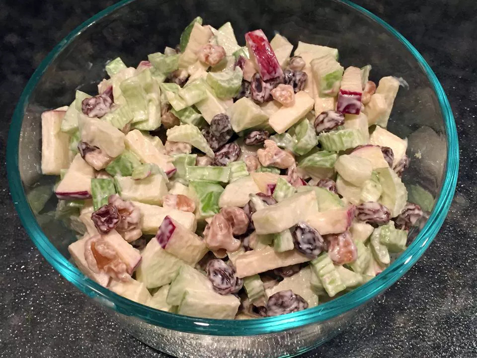

Waldorf Salad

Description
This Waldorf salad recipe is delicious, and you can vary the ingredients to your preference.
Try adding diced, roasted chicken to make this salad a meal!
Ingredients
- 0.5 cup mayonnaise
- 1 tablespoon white sugar
- 1 teaspoon lemon juice
- 0.125 teaspoon salt
- 3 apples -- peeled, cored, and chopped
- 1 cup thinly sliced celery
- 0.5 cup chopped walnuts
- 0.5 cup raisins (Optional)
Steps
- Whisk together mayonnaise, sugar, lemon juice, and salt in a serving bowl.
- Stir in apples, celery, walnuts, and raisins. Cover and chill in the refrigerator until ready to serve.